Hirschmann Bat-867 Wireless AP Set-up
READ BEFORE SET-UP: During development, use the exact set-up instructions outlined in this document. Once the machine is fully deployed onsite, we will need to change some of these parameters (specifically channels) to avoid factory interference.
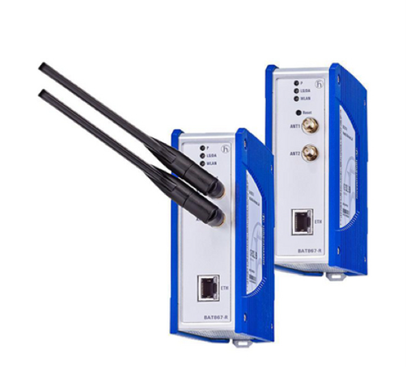
Prerequisites & Downloads
If you are configuring these devices from a blank PC or need to access manuals, please download the necessary tools below:
- Product Website & Manuals: BAT867-R Product Page
- Hi-Discovery Tool: Download Hi-Discovery
- LanConfig Software: Download LanConfig
Hardware Needed for Set-up
-
•
A pair of Bat-867 Wireless AP devices with the exact same firmware installed on them.
Critical Note: If the devices are running different firmware versions, several issues will occur while trying to configure them within the LanConfig software. - • A diagnostic laptop and a standard Cat5e/Cat6 network cable to directly connect to the devices.
-
•
The Machine Name where the pair of APs will be installed. This will be used as the P2P Radio ID. This must be 100% unique for each pair of Access Points being configured (using the TARUS machine name is standard practice).
-
•
Your initial Wi-Fi Channel selection. The 5GHz band is strongly recommended. Channel choice is critical. If this is your first pair of devices, choose a channel and work your way up 149, 153, 157, 161...
(Note: This channel will likely need to be changed once the machine is installed onsite to avoid overlapping with the customer's factory network).
Resetting a Device
If you are working with an AP that was previously configured and need to start fresh, follow these steps to wipe it:
- Locate the small reset pinhole just below the link lights on the face of the AP.
- Using a paperclip or small tool, press and hold the reset button for 20 seconds or until the status lights turn solid red.
- Keep holding the button until the light turns red for a second time.
- Release the button. The unit is now wiped, has no IP address, and no name. Proceed to Initial Setup.
Initial Setup (Assigning IP Addresses)
When the AP is brand new or freshly reset, it does not have an IP address. You must use the Hirschmann Hi-Discovery application to find the device on the network and assign it an initial IP.
1. Network Concept & Rules
- Both APs in the pair must be on the same subnet with the same netmask. (Example:
10.0.0.xxx / 255.255.255.0). - The system is configured purely as a point-to-point wireless bridge.
- You must designate one unit as the Master and one unit as the Slave.
Master AP = Placed at the desk or operator control station.
Slave AP = Mounted directly inside the TARUS machine. - To bridge successfully, the devices reference each other using unique P2P Radio IDs.
Master P2P radio ID: 4001A Desk
Slave P2P radio ID: 4001A Tower
2. PC Preparation
Before opening the software, your laptop must be on the same subnet as the default devices.
- Open Windows Network Adapters, right-click your Ethernet connection, select Properties, and choose IPv4.
- Set a static IP address for your laptop's physical NIC:
IPv4 IP address: 10.0.0.50
Subnet mask: 255.255.255.0 - Connect your laptop directly to the first AP with a network cable.
- Open the Hi-Discovery program from your Windows Start Menu.
3. Assigning the IP in Hi-Discovery
In the Hi-Discovery software, click the "Scan" button. Once your connected AP appears in the list, double-click it. Enter the exact information below based on which unit you are holding:
| If you are configuring the... | Set Name to: | Set IP Address to: | Set Netmask to: |
|---|---|---|---|
| Master Unit (Operator Desk) | master | 10.0.0.1 | 255.255.255.0 |
| Slave Unit (Machine Tower) | slave | 10.0.0.2 | 255.255.255.0 |
Click OK in the dialog box. The software will write this configuration to the AP. You can now close the Hi-Discovery application.
Configuring with LanConfig Program
Find the Device in LanConfig
Open the Hirshmann LanConfig program from your Start Menu.
- If the device is already listed in the main window from a previous setup, verify the IP address matches what you just set in Hi-Discovery (10.0.0.1 or 10.0.0.2).
- If the main window is empty, click FILE in the top-left corner and select Find Devices. Once the scan finds your device, click Add Selected devices to bring it into the main view.
Change the Default Administrator Password
- Right-click the device in the list and choose Configure.
- A prompt will appear requesting credentials. Use the factory defaults:
Administrator:admin
Password:private
Click Okay. - In the new configuration window, look at the folder tree on the left side. Expand the Management folder.
- Click on Admin.
- In the main panel, enter a new Main Device Password (e.g. Passme123) and repeat it in the confirmation box.
- Click OK at the bottom of the window to save the password change.
Run the Basic Settings Wizard
Double-click the device in the main window to open the Setup Wizard menu, then select Basic Settings.
Click "Next" after completing each of the following screens:
- Device name screen: Leave this exactly as it shows (it pulled "master" or "slave" from Hi-Discovery).
- Allow device access: Ensure this is set to Local networks.
- DHCP screen: Ensure DHCP mode is set to Off.
- Set IP screen: Verify the IP is correct. Do not enter a gateway or DNS server.
- Time Zone: Set to -5 (EST) and set DST to Automatic – USA. Ensure Time Server is
pool.ntp.org. (Adjust this based on the physical timezone where the machine will reside). - Optional info: Leave these fields blank.
- Updating: Select No automatic updating.
Configure WLAN & Point-to-Point
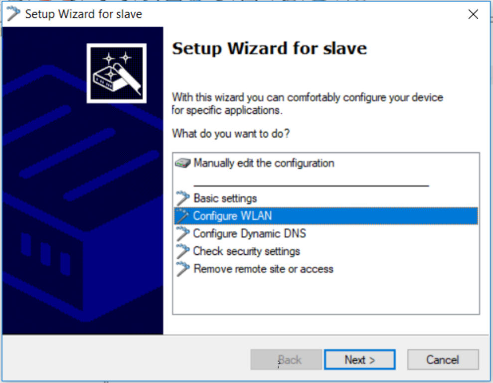
When the wizard menu re-opens, click Configure WLAN, then select Step by Step detailed configuration of WLAN.
Proceed through the wizard screens exactly as follows:
-
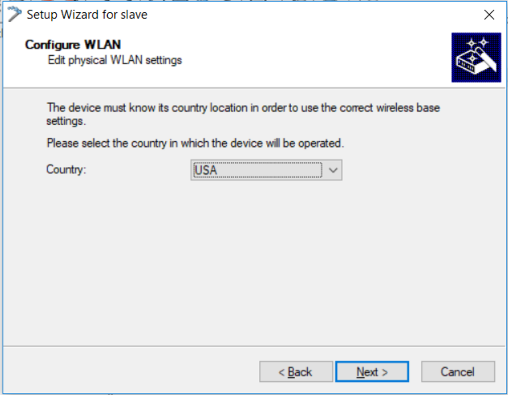
Select USA from the dropdown menu. Screen 1: Country SelectionSet the Country to USA. Click Next.
-
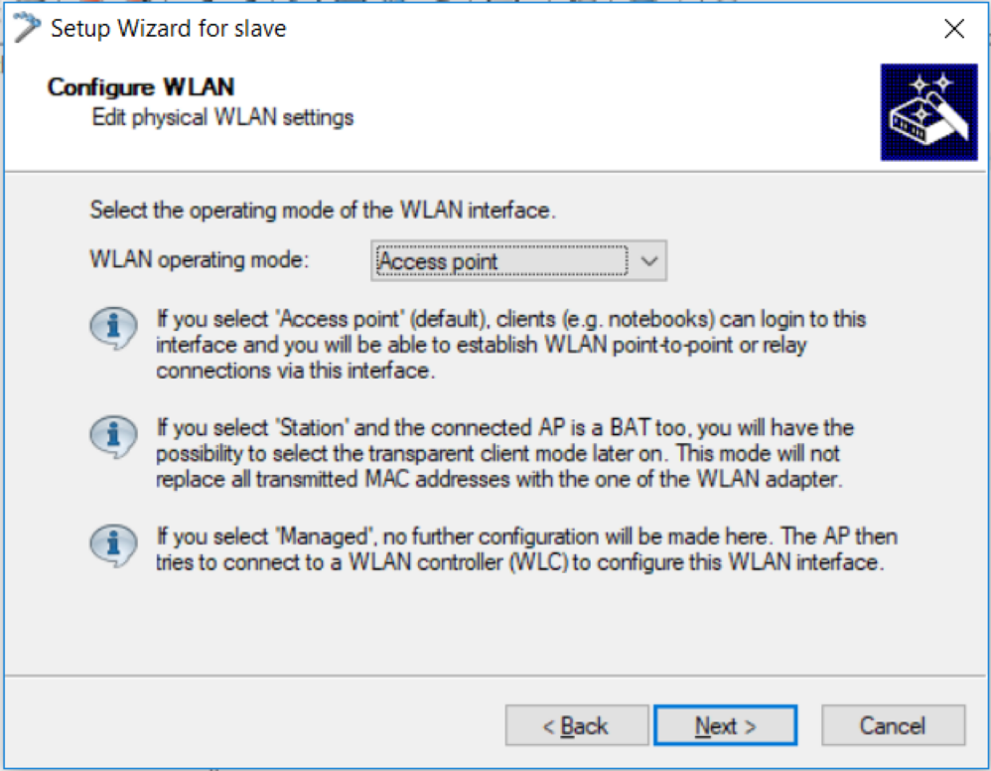
Ensure the dropdown is set to Access point. Screen 2: Operating ModeSet the WLAN operating mode to Access Point. Click Next.
-
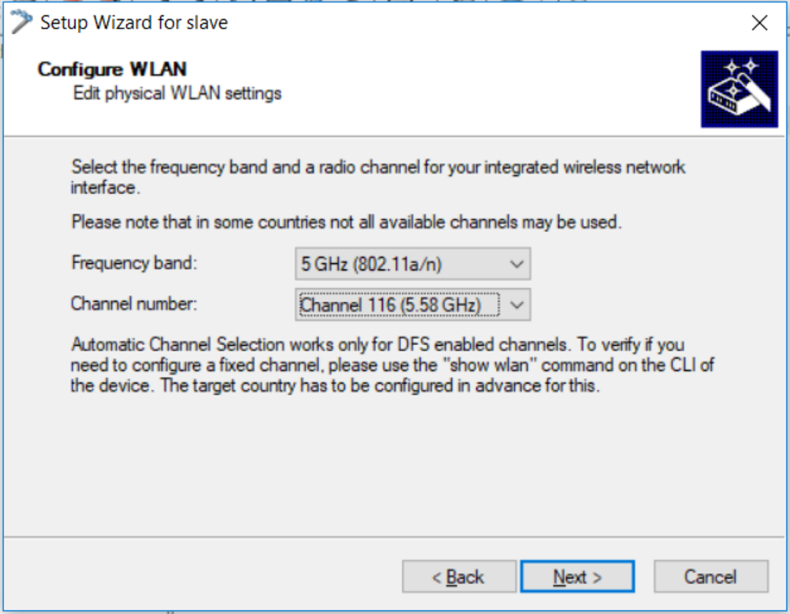
Select 5GHz and your designated clean channel. Screen 3: Frequency Band & ChannelSelect the 5GHz (802.11a/n) band. Choose your specific channel from the dropdown.
Rule: The Master and Slave MUST be on the exact same channel to communicate.
-
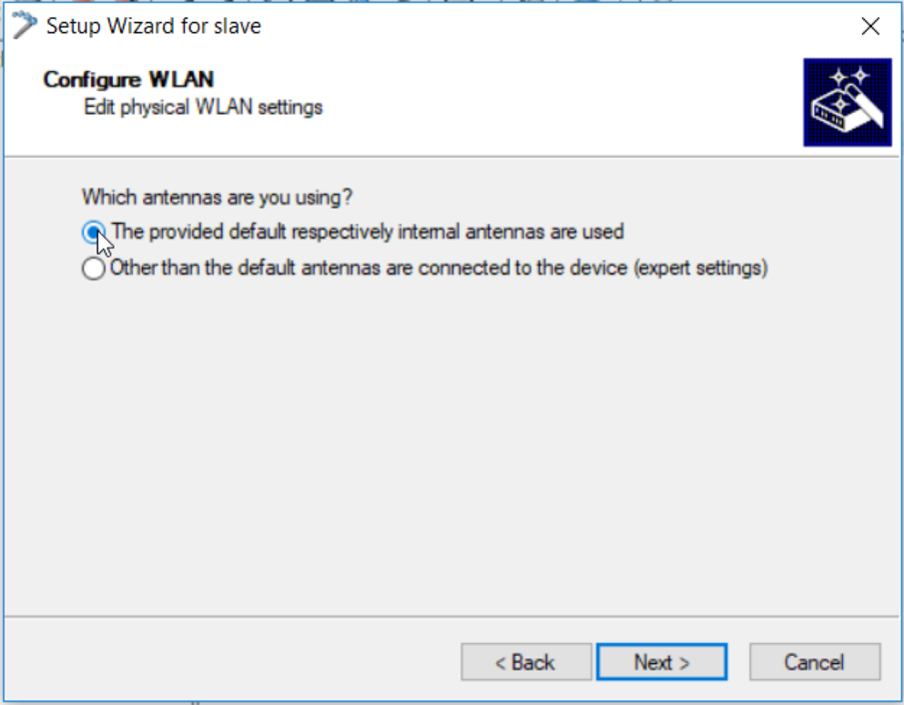
Select the default/internal antennas option. Screen 4: Antenna TypeSelect the top radio button for The provided default respectively internal antennas are used. Click Next.
Note: If a subsequent screen asks for Antenna Gain, leave it at the default of 3.
-
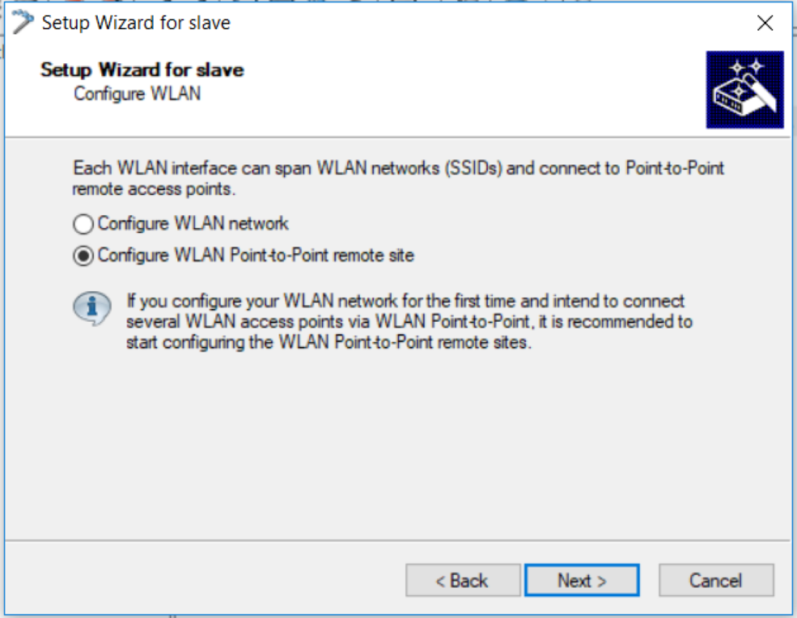
Select the Point-to-Point option. Screen 5: Setup TypeSelect the bottom radio button for Configure WLAN Point-to-Point remote site. This is required to bridge the two APs. Click Next.
-
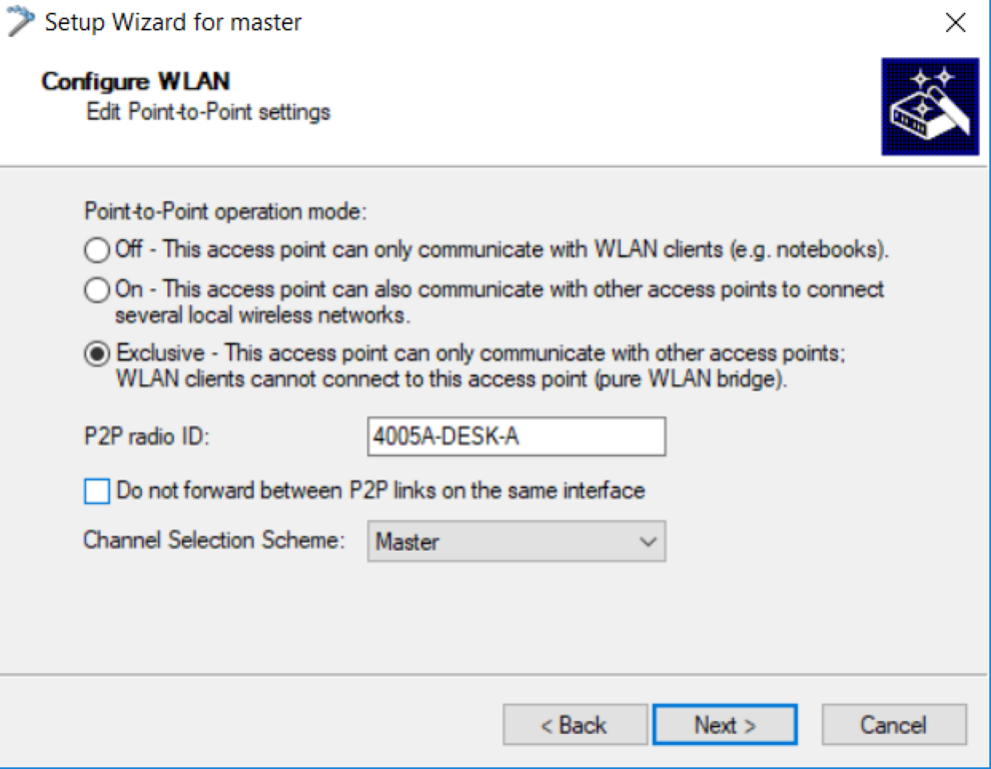
Configure your unique P2P ID and set mode to Exclusive. Screen 6: P2P Network Settings (CRITICAL)Pay close attention to these settings to ensure the bridge functions properly:
- Point-to-Point operation mode: Select Exclusive (locks the bridge).
- P2P Radio ID: Enter the unique name (e.g., 4001A Desk).
- Channel Selection Scheme: Choose Master or Slave.
- Do not forward...: Ensure this box is Left Unchecked.
-
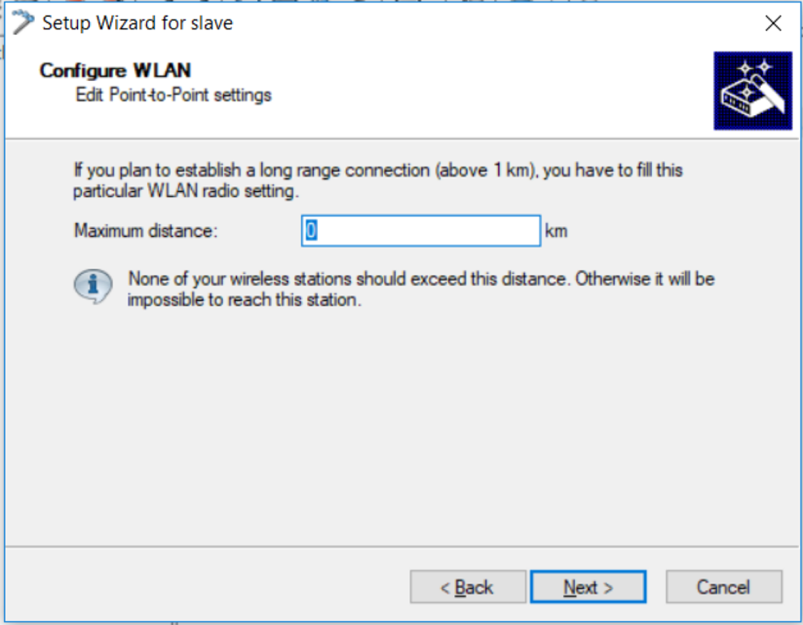
Set Maximum distance to 0. Screen 7: Maximum DistanceEnter 0 km. This is for local machine installations. Click Next.
-
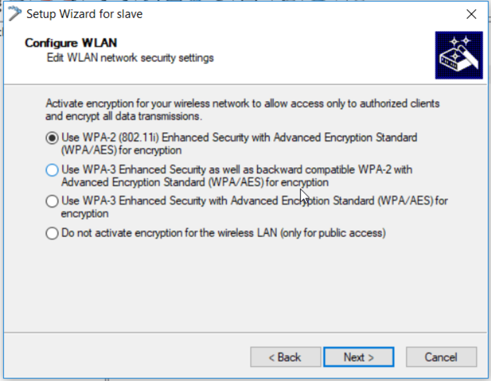
Select WPA-2 encryption. Screen 8: Encryption SecuritySelect the top option: Use WPA-2 (802.11i) Enhanced Security. Click Next.
-
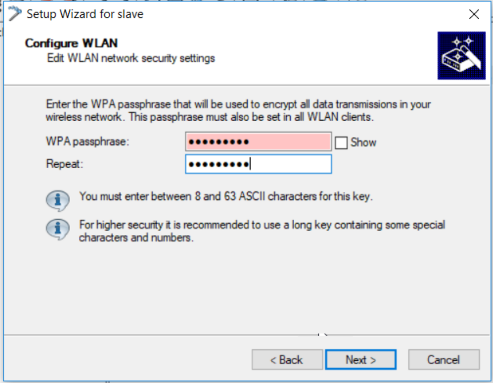
Enter and confirm the secure passphrase. Screen 9: WPA-2 PassphraseEnter the exact same password for both devices.
Development default: Passme123 -
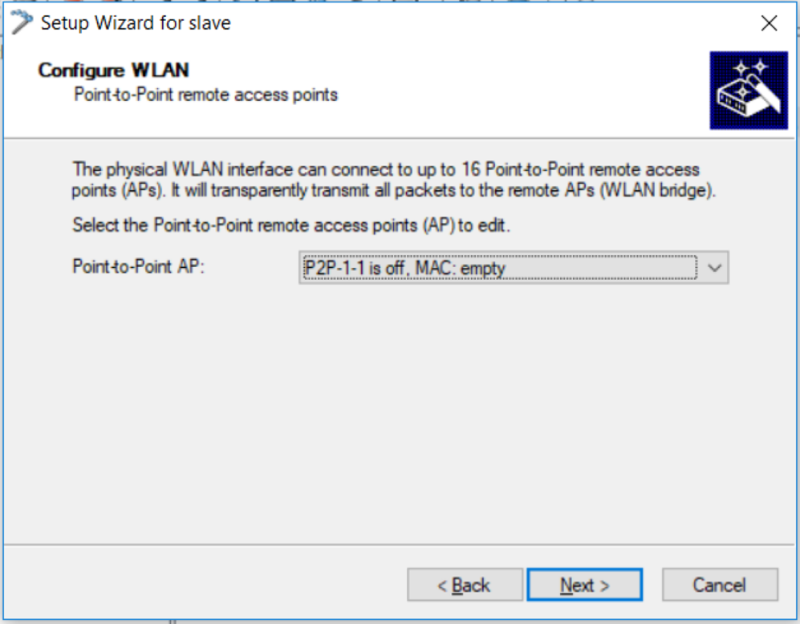
Ensure P2P-1-1 is empty. Screen 10: Point-to-Point Remote APsEnsure the dropdown says exactly P2P-1-1 is off, MAC: empty. Do not select anything else. Click Next.
-
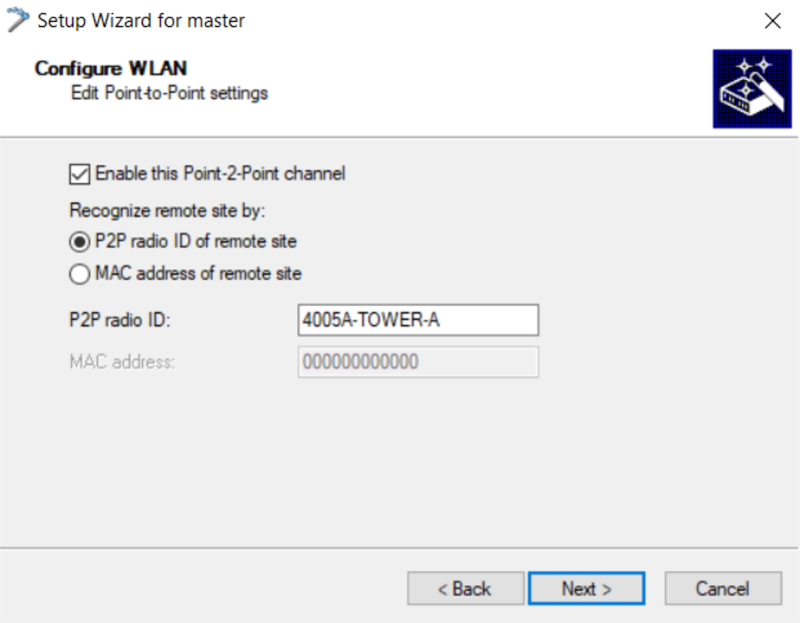
Check the enable box and input the partner's unique ID. Screen 11: Target the Remote DeviceThis screen explicitly tells the AP *who* it is allowed to bridge with. Apply these exact settings:
- Check the box for Enable this Point-2-Point channel.
- Select the radio button for Recognize remote site by: P2P radio ID.
- P2P radio ID: Type in the exact name of the OTHER device. If you are holding the Master, type in the Slave's ID here (e.g. 4001A Tower).
Click Finish. The software will upload the configuration.
Once this process is fully completed on both devices, their physical WLAN status lights should illuminate flashing Green indicating a successful bridge.
Action Required: Disconnect from this AP and completely repeat Steps 1-4 for the second device in the pair.
Performance & Stability Fine-Tuning
These advanced settings are not available in the wizard and must be changed manually on BOTH devices after initial setup is complete.
Part A: Physical WLAN Settings
-
In LanConfig, right-click the device and select Configure.
-
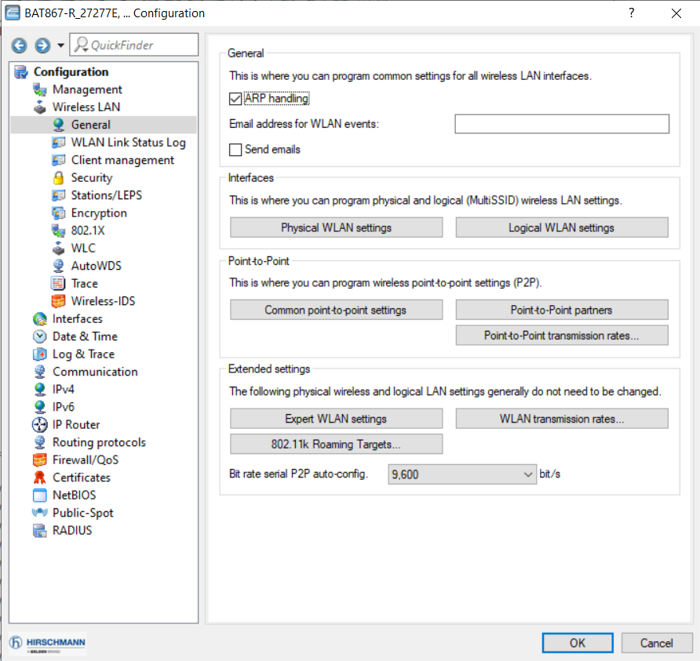
Navigate to Wireless Lan > General In the left sidebar tree, expand the Wireless Lan folder, then click on General. -
In the main panel, click the button labeled Physical WLAN settings.
-
A new window opens. Click the Radio tab at the top.
-
Verify your channel. If using a channel between 36-48, set the Sub-bands dropdown to 1. If using 149-165, set Sub-bands to 2.
-
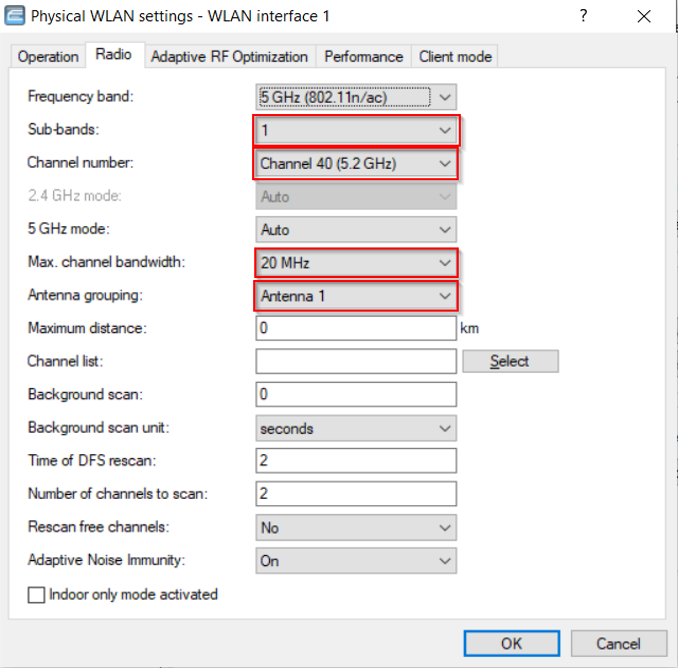
Apply the 20 MHz bandwidth and Antenna 1 constraints. Change Max. channel bandwidth to exactly 20 MHz.
Change Antenna grouping to exactly Antenna 1.
-
Click OK to close the Physical settings window.
Part B: Logical WLAN Settings
-
You should still be on the Wireless Lan > General page in the main LanConfig window.
-
Now, click the button labeled Logical WLAN settings.
-
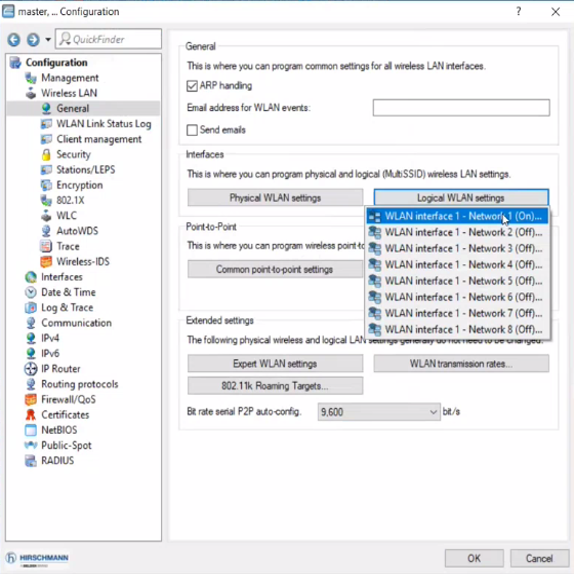
Selecting the active network interface. In the pop-up list, select the very first option: WLAN interface 1 - Network 1 (On). -
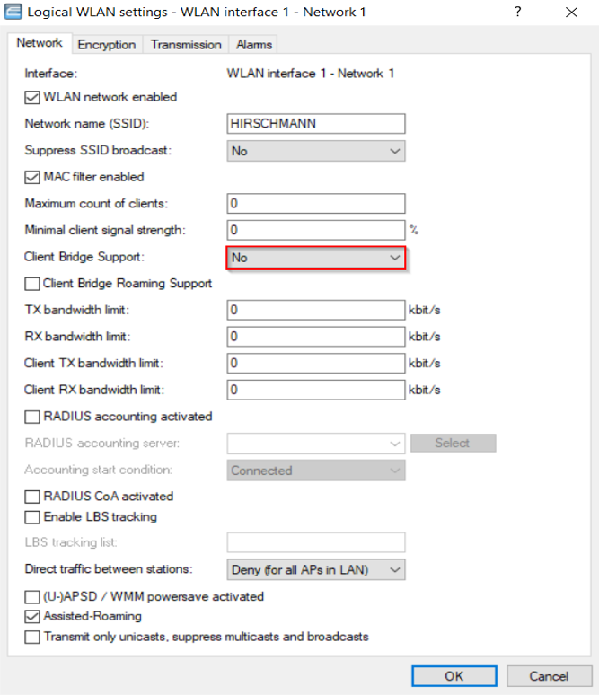
Disabling client bridge support. The window will open on the Network tab. Find the dropdown for Client Bridge Support and change it to NO. -
Click over to the Transmission tab at the top of that same window.
-
Change the RTS Threshold value to exactly 65.
-
Click OK on all open windows to write these final configurations to the device.
Final Validation & Ping Test
You have completed the baseline setup. To verify the wireless bridge is passing data, perform this physical ping test:
- Power on both the Master and Slave Hirschmann units.
- Change your diagnostic laptop's IPv4 address to a completely different subnet than what you just used (e.g. change it from
10.0.0.50to192.168.1.50). - Plug your laptop's ethernet cable into the Master (Desk) AP.
- Open the Windows Command Prompt (cmd).
- Attempt to ping the Slave AP by typing:
ping 10.0.0.2and hitting Enter. - If you receive replies, your laptop is successfully sending data through the Master, across the air to the Slave. The bridge is functional.
Hardware LED Status Indicators
There are 3 main flashing status lights on the faceplate of the Hirschmann unit. Use these for quick visual diagnostics:
"P" (Power & Status)
- Solid Green:Booted and normal operation.
- Flashing Red:Hardware error detected. Check diagnostics.
- Flashing Green/Red:Security warning: The default password 'private' is still active.
"LS/DA" (Link Data)
- Off:No physical ethernet cable detected.
- Solid Green:Ethernet connected but idle.
- Flashing Yellow:Active network data traffic is flowing.
"WLAN" (Radio Link)
- Off:Radio is disabled or configuration is incomplete/failed.
- Solid Green:WLAN module activated and actively broadcasting the bridge.
Using the Ekahau Sidekick 2
Mapping Customer Network Traffic
Spectrum Analysis for Clean Channel Selection
The Ekahau Sidekick 2 is a professional RF spectrum analysis tool. When deploying TARUS machines in highly active customer factories or studios, you must use this device to locate an unused 5GHz channel for the Hirschmann APs to prevent fatal machine communication dropouts.
1 Connect & Launch
- Power on the Ekahau Sidekick 2 device (ensure it is charged).
- Connect it directly to your diagnostic iPad or Laptop using the provided USB-C cable.
- Launch the Ekahau Analyzer app (Mobile) or Ekahau Pro software (Desktop).
- Sign in with your Tarus Ekahau credentials if prompted.
2 Read the Spectrum
- In the app, navigate to the Spectrum Analysis or Waterfall view.
- Filter the view to show only the 5GHz band (ignore 2.4GHz and 6GHz).
- Observe the color densities: Red/Orange peaks mean a channel is heavily utilized by the factory. Deep Blue/Black means the channel is empty and available.
3 Walk the Machine Footprint
- Hold the Sidekick device and physically walk around the entire perimeter of where the TARUS machine is installed.
- Watch the analyzer on your screen. You are looking for a specific channel (e.g. 149 or 153) that remains completely "quiet" (Blue/Black) during your entire walk.
4 Select & Document
- Identify the cleanest 20MHz wide channel in the 5GHz spectrum.
- Write down this channel number. You will program this specific channel into the Hirschmann LanConfig software for both the Master and Slave units.
Site Deployment & Final Tuning
Mitigating Channel Interference
Mandatory steps for customer site deployments.
When deploying a machine onsite, the pre-programmed development channel will almost always overlap with the customer's enterprise Wi-Fi. This causes severe "Co-Channel Interference", resulting in extreme latency and dropped connections between the machine and the desk. You must execute the following protocol at every installation.
Identify a Clean Channel
Following the steps in the previous section, use the Ekahau Sidekick to map the RF space inside the customer's facility and document an empty 5GHz channel that does not have high usage spikes.
Update Both Hirschmann Devices
Connect to your Hirschmann devices via the LanConfig software to apply the new channel.
1. Right-click device → Configure
2. Navigate to: Wireless Lan > General
3. Click 'Physical WLAN settings'
4. On the 'Radio' tab, change the Channel Number dropdown to the clean channel.
5. Click OK to save. Repeat for the 2nd device!
Mandatory Customer I.T. Coordination
You MUST contact the customer's internal I.T. or Networking department. Request that they explicitly "Exclude" or "Lock Out" your chosen 5GHz channel from their ceiling Access Points in the immediate area.
Why? Enterprise networking systems (like Cisco, Aruba, Meraki) use "Auto-RF" tuning. If I.T. does not lock out your channel, their system will eventually auto-tune itself onto your clean channel, overpowering the Hirschmann radios and crashing the machine connection days or weeks after you leave.